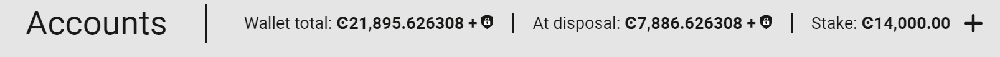
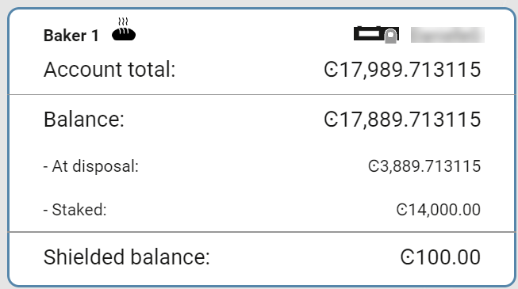
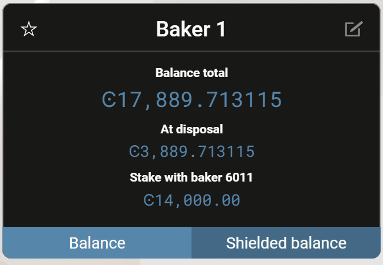

Desktop Wallet navigation and settings#
This topic describes the information and the tasks that are available in the Desktop Wallet. To learn more about creating accounts, see Create an account in the Desktop Wallet.
To view information about an account, go to Accounts and select the relevant account. At the top of the window you see the following:
Wallet total shows the total amount of CCDs in all accounts in this wallet, including shielded balances (deprecated) and CCDs that are scheduled to be released to your account on a future date.
At disposal shows the amount of CCDs you have available for transactions in all accounts in this wallet. This includes shielded balances (deprecated) but not staked amounts or CCDs that are scheduled to be released to your account on a future date.
Stake shows the amount of CCDs staked in all accounts for this wallet.
The most common tasks on an account are:
Send: Send CCD to a recipient in your address book. See Create CCD transfer in the Desktop Wallet.
Receive: Select this to display the account address. Select the icon to the right to copy the address if you want to share it with other participants in the network or let them scan the QR code.
In the account card in the accounts list, you can see the following information:
The Account Total shows the total number of CCDs on the account, which includes the CCDs that are available and any staked CCDs or shielded CCDs (deprecated). It also includes CCDs that are scheduled to be released to your account on a future date.
The Balance Total shows the total number of CCD on the account, which includes the CCD that is available and any staked CCD or CCDs that are scheduled to be released to your account on a future date. It does not include shielded CCDs (deprecated).
The At disposal amount is the amount you can use for transactions, which excludes staked CCD and CCD in a release schedule.
The Staked amount shows the amount staked if the account is a validator or delegator.
Shielded balance shows any shielded amounts (deprecated) on the account.
In addition, you can see the following information about the selected account on the Balance tab in the account details:
The Balance Total shows the total number of CCD on the account, which includes the CCD that is available and any staked CCD or CCDs that are scheduled to be released to your account on a future date. It does not include shielded CCDs (deprecated).
The At disposal amount is the amount you can use for transactions, which excludes staked CCD and CCD in a release schedule.
The Staked with… amount shows the amount staked if the account is a validator or delegator.
The Delegation to… amount shows the amount delegated to a staking pool or passive delegation.
On the Shielded balance tab (deprecated), you’ll see:
The Shielded balance total (deprecated) shows the amount of CCD that you’ve shielded (deprecated). The Balance total is visible to all participants on the Concordium Blockchain, while the Shielded balance total (deprecated) is visible to you only.
The Transactions box contains the 10 latest transactions on the account including transfers to other accounts, shielded transfers (deprecated), and scheduled transfers. When you select a transfer, you’ll see the sender and recipient address, the transaction hash, and the block hash. Both successful and failed transactions are listed. If you have any log filters on the account they are also applied here.
More options#
When you select Account list at the top of the window, the button name toggles to More options.
Account list toggles to More options.
You’ll see a variety of information in More options about your account and a number of tasks you can perform:
Transaction log. View a list of transactions on the account. Use Filters to specify which transaction types you want to be displayed in the Transfers list. See Apply a transaction log filter.
Send CCD with a schedule: Send CCD according to a schedule. See Transfer CCD with a schedule.
Inspect release schedule: Shows any future CCD releases that are scheduled to be released on your account.
Export account reports: Export a file with a list of all transactions on the account. Set the relevant time period and filters, and then select Make account report. Save the export as a .csv file.
Credentials and attribute information: Here you can see all credential ID that are associated with the account and the attributes that are revealed for each credential ID (if any). You can also see the creation dates and valid to dates of the credentials. One or more credentials can be associated with an account.
Update credentials: Add new credentials to the account. See Add credentials to an account.
Register data: Add a small message to the chain, such as a hash. This information is visible on the chain and cannot be removed. Note that adding this message incurs a transaction fee.
Register as a validator: Make the account a validator account. See Add a validator account in the Desktop Wallet. If the account is already a validator account, you’ll see Validation which contains a list of options for managing a validator account: Remove validator, Update validator keys, Update validator stake, and Update validator restake earnings.
Register as a delegator: Register the account as a delegator. See Delegation for information about delegation. If you are already delegating, you’ll see Delegation which contains a list of options for managing delegation.
Desktop Wallet settings#
The Desktop Wallet has a number of settings such as password and node settings that you access by going to the Settings page.
Preferences#
The Desktop Wallet provides a set of multi-signature transactions called Foundation transactions that only members of the Concordium Foundation can sign.
These transactions are disabled by default, and if you’re not a member of the Concordium Foundation it is strongly recommended that you don’t enable them. If you do enable the transactions, they will be listed on the multi-signature transactions page. However, you’ll not be able to actually sign or submit any of these transactions.
Node settings#
Here you specify which node on the blockchain that you want to connect to.
If you’re running the mainnet version of the Desktop Wallet, you must connect to a mainnet node. In the Address field, enter
127.0.0.1and in the Port field enter20000.If you’re running the testnet version of the Desktop Wallet, you must connect to a testnet node. In the Address field, enter
127.0.0.1and in the Port field enter20001.Select Set connection. If the connection works, there’s a message saying Successfully connected.
You can run a node using Windows, macOS, and with Docker or a Debian package on Linux.
Terms and conditions#
To view the latest version of the License notices and Terms and conditions for the Desktop Wallet:
On Windows, press Alt to display the menu bar, and then in the Help menu, choose the document you want to view.
On Linux, press Alt to display the menu bar, and then in the Help menu, choose the document you want to view.
On macOS, select Help in the menu bar, and then choose the document you want to view.